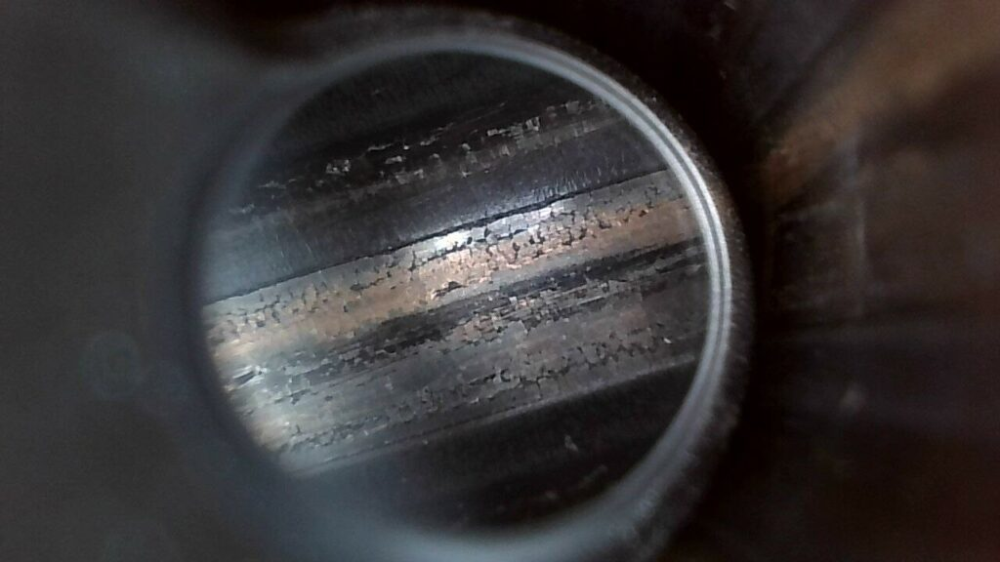
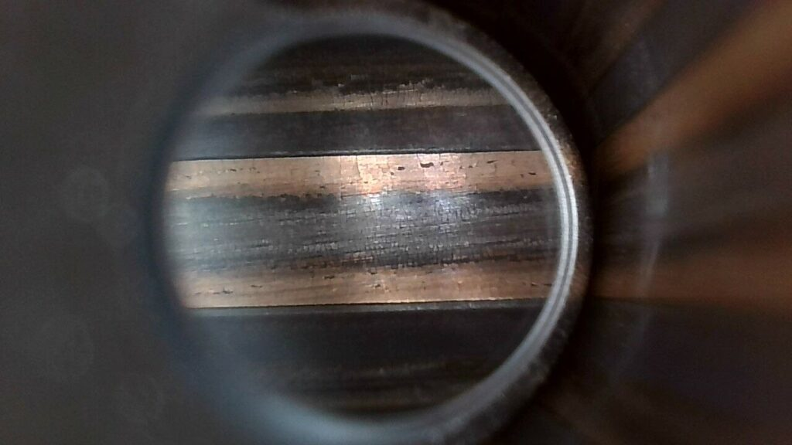
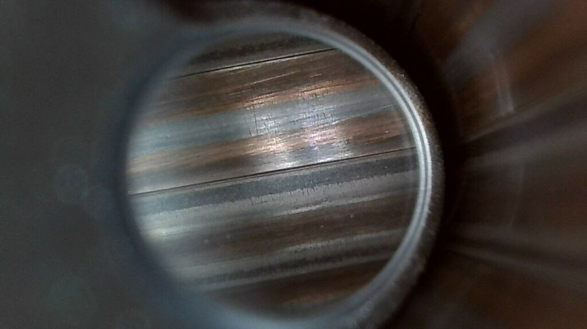
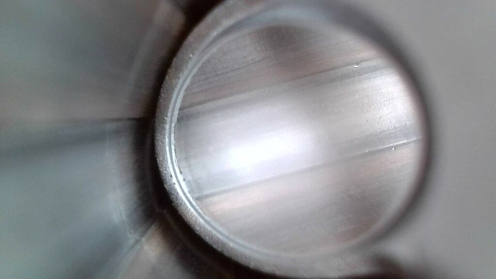
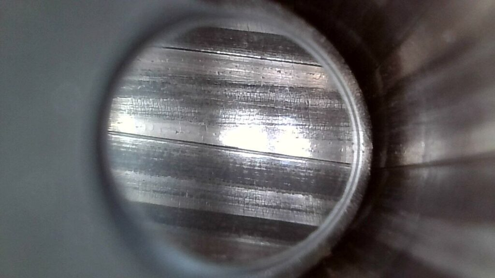
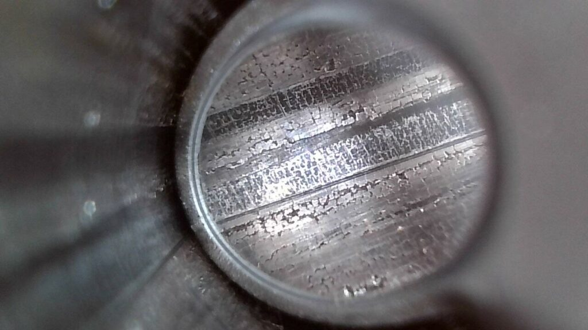

Nie możesz wyczyścić starej lufy karabinu?
2025-11-23
Nie możesz wyczyścić starej lufy karabinu?
Czyszczenie starych, mocno zabrudzonych luf to prawdziwe wyzwanie. Standardowe środki często zawodzą, a delikatne podejście nie przynosi efektów, gdy na powierzchni lufy zbiera się latami nagromadzony brud. Na szczęście, nasz zespół przetestował wyjątkowo skuteczną mieszankę czyszczącą, która pozwala przywrócić dawny blask nawet najbardziej zaniedbanym egzemplarzom.
Sprawdziłem przepis na odszczurzanie luf zabawek mocno już leciwych. Może komuś się przyda, bo leśny znowu przemierza Polskę 😆 (chociaż Carla Gustafa, jak mi przywiózł, to z ręką na sercu piękna lufa, piękna, piękna kawalerze, funkiel nówka). Poniżej zdjęcia lufy CG63 przed i po kuracji:
24h zalana lufa + szorowanie + 24h zalewa + szorowanie.
Jak na koszty około 50 zł za 2 litry mieszanki uważam całkiem całkiem. Przepis:
- 1/4 benzyny lakowej,
- 1/4 acetonu,
- 1/4 nafty,
- 1/4 oleju ATF IIID (ja użyłem IID, bo miałem pod ręką, a nie chciało mi się jeździć).
Mieszankę sprawdził i zarekomendował do użytku Łukasz z naszego zespołu, który testował ją na mocno zabrudzonej starej lufie i potwierdził jej skuteczność.
Niżnej zdjęcia
Przed czyszczeniem



Po czyszczeniu



dzięki Łukasz 🙂